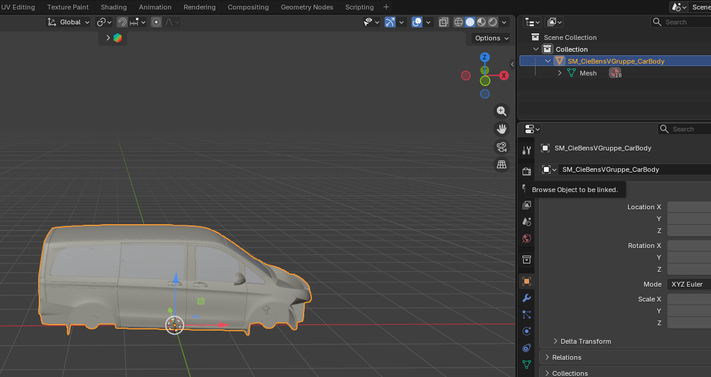
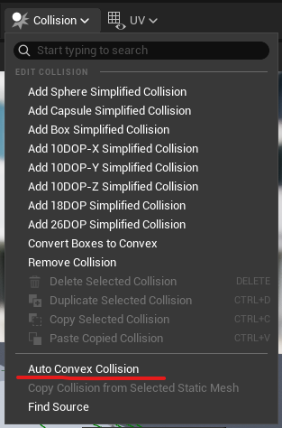
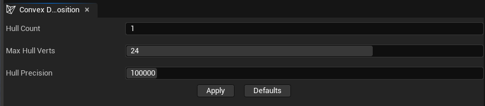
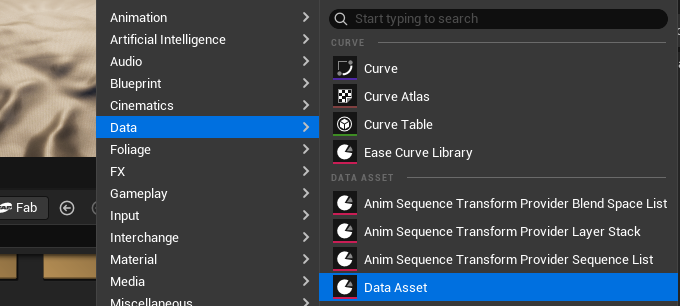
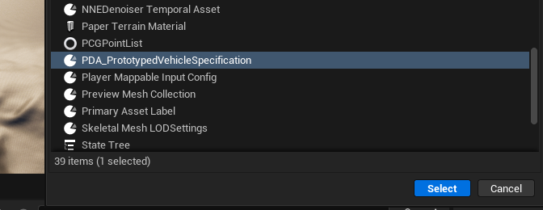
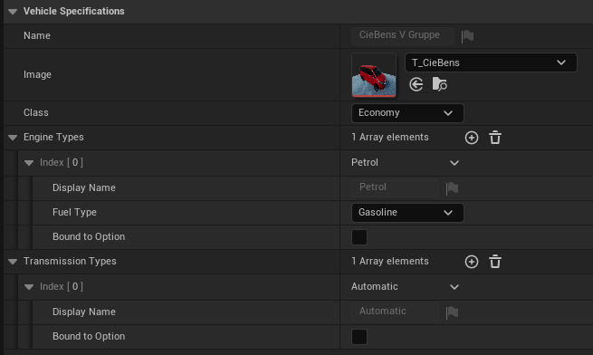

Navigation: README | 01. Minimal Car | 02. Exterior, Lights & World | 03. Interior, Dashboard & Cameras | 04. Mirrors & Wipers | 05. Sounds & FMOD | 06. Specs, Logic & Reference
In this module, you will go from an empty folder to a drivable vehicle in-game: prepare and import a body and 4 wheels, assign basic materials, hook up minimal physics, assemble the Vehicle Actor with a basic camera, create the specification asset (DA_*), build a .pak, test it locally in City Car Driving 2.0, and learn how to publish it to Steam Workshop.
What is intentionally omitted from Module 1:
Interior, mirrors, wipers, headlights, license plates, custom sounds, LogicBox, and FuelTank are not required for the car to spawn and drive. You can add all of those step by step in Modules 2–6.
flowchart TD
S1["Step 1. Mod Folder & Physics Configs"] --> S2["Step 2. 3D Export (Body + 4 Wheels)"]
S2 --> S3["Step 3. UE 5.8 Import & Basic Materials"]
S3 --> S4["Step 4. Assemble Actor V_ModName<br/>(Body + 4 Wheels + Camera)"]
S4 --> S5["Step 5. Minimal Vehicle.ini Edits<br/>(Mount, Length, Radius)"]
S5 --> S6["Step 6. Vehicle Spec DA_ModName<br/>(PDA_PrototypedVehicleSpecification)"]
S6 --> S7["Step 7. Build .pak, Local Test<br/>& Steam Workshop Upload"]
CityCarDriving2.uproject in Unreal Engine 5.8.Ctrl + Space), click Settings (top-right gear icon), and make sure Show Plugin Content is checked.All → Plugins → Mods Content.MyFirstCar.MyFirstCar, create subfolders to keep things tidy: Meshes, Materials, Textures.VehicleLib)MyFirstCar folder → Show in Explorer — Windows File Explorer will open ...\Plugins\Mods\Content\MyFirstCar\.Docs\Samples\VehicleLibConfigs\Vehicle012_HangugEclauto\ (petrol sedan, great general-purpose starting point)Docs\Samples\VehicleLibConfigs\Vehicle002_UlgaresGroberolf\Plugins\Mods\Content\CieBensVGruppe\ (AWD diesel).Plugins\Mods\Content\MyFirstCar\:
Vehicle.inioptions.xmlEngine.csv (if your chosen sample uses differently named .csv files, copy those; if copying from CieBensVGruppe, also copy AwdAuto.xml and AwdManual.xml).Vehicle.ini and options.xmlOpen the copied Vehicle.ini and options.xml in any text editor (Notepad, Notepad++, VS Code) saved as UTF-8.
All paths inside these files are resolved relative to the base game's Content/ folder:
Common/Vehicles/MotorCars/...) do not need changes — they resolve automatically.../Plugins/Mods/Content/<ModName>/.Update the sample car name to your mod folder name (MyFirstCar) in the lines below:
In Vehicle.ini:
[Vehicle]
; If using a standard built-in game schema (recommended to start):
DefaultSchema = Common/Vehicles/MotorCars/Schemes/FwdAuto.xml
; (or if you copied a local schema into your mod folder: ../Plugins/Mods/Content/MyFirstCar/AwdAuto.xml)
[Engine]
PowerCurves = ../Plugins/Mods/Content/MyFirstCar/Engine.csvIn options.xml:
<?xml version="1.0" encoding="UTF-8" ?>
<Options>
<AvailableOptions>
<Option Name="TransmissionType" SetSchema="true">
<OptionValue Value="Auto" SchemaName="Common/Vehicles/MotorCars/Schemes/FwdAuto.xml" />
<OptionValue Value="Manual" SchemaName="Common/Vehicles/MotorCars/Schemes/FwdManual.xml" />
</Option>
</AvailableOptions>
</Options>Three strict Vehicle.ini syntax rules:
; with NO space before ;!
Mount = 1.63; 0.85; 0.4455Mount = 1.63 ; 0.85 ; 0.4455 (a space before ; starts an inline comment and drops everything to the right!).. (never a comma).Read this carefully before exporting from Blender!
In Unreal Engine, 1 unit = 1 centimeter, the front of the car faces +X, and up is +Z.
You must NEVER scale the mesh or Actor inside Unreal Engine (Scale must always remain 1.0, 1.0, 1.0) — otherwise physics and suspension will break!
Recommendations for exporting FBX from Blender:
Unit Scale = 1.0) and export scaling causes issues, scale the model up by 100x directly in Blender and apply transforms (Ctrl + A → Apply All Transforms), or work in centimeters from the start (Scene Properties → Units → Metric, Unit Scale = 0.01, Length = Centimeters) with Scale = 1.0 applied.File → Export → FBX):
-X ForwardZ UpFace (prevents smoothing group warnings in UE).Body)
Body mesh).+X, centered at the world origin (0, 0, 0).Wheel)
(0, 0, 0).Y (rolling forward along +X).Body)MyFirstCar/Meshes folder in the Content Browser..fbx file from Explorer into the Content Browser (or click Import).Import Collisions — ON if you authored custom UCX_ collision in your 3D editor; if not, you can uncheck it (the body requires collision for impacts, and it is best generated in the Static Mesh Editor — see below).Fallback Collision Type (replaces the old Generate Missing Collision setting from UE 5.1) — you can leave the default 18DOP Simplified or turn it OFF (None), as none of the built-in presets fit a car shape well. It is better to generate the body collision manually via Auto Convex Collision after import.Import Materials — OFF (uncheck so UE doesn't auto-generate incompatible base materials).Build Nanite — OFF (Nanite is disabled in this project).Offset Uniform Scale and Build Scale — leave both at 1.0 (default).Approx Size. A regular passenger car should read around 450 × 180 × 150 (centimeters). If it reads 4 × 2 × 1, the model exported 100x too small — return to Step 2.1!Auto Convex Collision)If you did not author custom UCX_ collision in your 3D editor, generate clean convex collision directly inside the open Body Static Mesh Editor:
18DOP Simplified) was created during import and you want to remove it, select the collision shape in the viewport and press Delete (or use Collision → Remove Collision).Collision and choose Auto Convex Collision.
Convex Decomposition panel opens with three parameters:
Hull Count — for passenger cars, there is no reason to set this higher than 1. If the vehicle has an open truck bed or other pronounced concave areas, you can increase this number.Max Hull Verts — typically between 16 and 32; the optimal value is 24.Hull Precision — can be left at the default 100000.
Apply and save the asset (Save / Ctrl + S).Delete.)Wheel)Import the wheels into MyFirstCar/Meshes the same way, with one critical difference:
Import Collisions and Fallback Collision Type — must be OFF (False / None)! Wheel meshes must NOT have collision (road contact is simulated via WheelRaycast in VehicleLib).Import Materials — OFF.Build Nanite — OFF.Core Material Rule in CCD 2.0:
Mods do NOT support custom Master Materials!
You must strictly create Material Instances inheriting from the pre-built parent materials located at:
Content/Common/MasterMaterials/VehicleMaterials/ModMaterials/

Drag your textures (.png / .tga) into MyFirstCar/Textures. Double-click each imported texture:
Virtual and enable Virtual Texture Streaming. A VT badge will appear in the texture thumbnail corner.
Compression in Details and set Compression Settings = Masks (no sRGB).
Ctrl + S).To make your car look clean right away, create 3 basic Material Instances:
Content/Common/MasterMaterials/VehicleMaterials/ModMaterials/ in the Content Browser.MyFirstCar/Materials/ folder:
MI_Mod_CarPaint → MI_MyFirstCar_Paint (painted body — you can pick a paint color even without textures!).MI_Mod_Exterior → MI_MyFirstCar_Exterior (plastic, metal, wheel rims).MI_Mod_Tyre → MI_MyFirstCar_Tyre (tires).MI_*, check the boxes next to parameters you want to override (color/textures), assign your textures, and click Save.MI_* assets to their Material Slots in Details. Click Save.(Full reference for all 14 MI_Mod_* materials, liveries, glass, and lights is in Module 2 and Module 3.)
V_MyFirstCar)The Vehicle Actor is a Blueprint container holding the body, wheels, and cameras.
Keep these 3 rules in mind across every module:
Scale is always (1.0, 1.0, 1.0) on the Actor and every component.Body, set Collision Presets = NoCollision and disable Receives Decals.Body) keep Location and Rotation at (0, 0, 0) unless explicitly stated otherwise. You may attach additional decorative child meshes to any node (with NoCollision and any desired Transform).Plugins/Mods Content/MyFirstCar/.V_MyFirstCar and double-click to open it.Body)+ Add → search Static Mesh → select Static Mesh.Body (case-sensitive!). Make sure it is attached to DefaultSceneRoot with Location and Rotation at (0, 0, 0).Body and configure in Details (right panel):
BlockAllDynamic.Mass (kg) (Override Mass) and enter the sprung body mass in kilograms (curb weight minus the 4 wheels; typically 1200–1500 kg for a sedan, 2100 kg for a minivan).(X, Y, Z) relative to the geometric collision center. For a first test, leave at (0, 0, 0) or lower Z slightly (e.g., Z = -20) for extra stability. (See VehicleLib_MD/00_Quick_Start.md for the exact weight-distribution formula.)
Wheel*)In standard schemas, the rear axle is named Back — NOT Rear!
Use these exact 4 component names:
WheelFrontLeft — front leftWheelFrontRight — front rightWheelBackLeft — rear leftWheelBackRight — rear rightIn Module 1 (without suspension calipers), attach wheels directly to Body:
Body in Components, click + Add → Static Mesh, and name it WheelFrontLeft.Collision Presets = NoCollision, and uncheck Receives Decals.Mount in Vehicle.ini; see Step 5).WheelFrontRight, WheelBackLeft, and WheelBackRight.(When you add non-rotating brake calipers SuspensionFrontLeft/Right/BackLeft/Right in Module 2, Location moves to Suspension* and each child Wheel* becomes Location = (0, 0, 0).)
flowchart TD
Root["DefaultSceneRoot<br/>Scale = (1, 1, 1)"] --> Body["Body (StaticMeshComponent)<br/>Collision: BlockAllDynamic<br/>Mass (kg) + Center Of Mass Offset"]
Body --> WFL["WheelFrontLeft<br/>NoCollision, Location = Mount (cm)"]
Body --> WFR["WheelFrontRight<br/>NoCollision, Location = Mount (cm)"]
Body --> WBL["WheelBackLeft<br/>NoCollision, Location = Mount (cm)"]
Body --> WBR["WheelBackRight<br/>NoCollision, Location = Mount (cm)"]
Root --> Cam["ThirdPersonBack (SceneComponent)<br/>ControlBlock: Camera"]
ControlBlock and Adding a Basic Camera (ThirdPersonBack)Let's add one basic third-person camera so you get a good view of your car right away, and learn CCD 2.0's core configuration mechanism — ControlBlock.
What about the other cameras (FirstPerson, Windshield, ThirdPersonFront, TopDown)?
Any cameras you haven't manually created yet will still exist in-game, but at default positions that may not quite fit your specific vehicle's dimensions. You can fine-tune all 5 cameras in Module 3.
DefaultSceneRoot → click + Add → Scene (creates a SceneComponent). Name it Cam_ThirdPersonBack.X = 0, Y = 0, Z = 130 cm).ControlBlock (memorize this workflow — it is used throughout the entire guide):
Cam_ThirdPersonBack selected, type Asset User Data in the Details search box.+ next to Asset User Data → in Index [0], pick Control Asset Data.Index [0] → click + next to Control Blocks.Camera. Make sure the right dropdown says Control Block.Camera → click + next to Properties twice to add 2 properties:
Type → right type: Control Property String → expand and set Value to ThirdPersonBack.ArmLength → right type: Control Property Float → expand and set Value to the camera distance in centimeters, e.g. 600.0. (Note: the screenshot below shows an older typo ArmLenght, but the current version uses the correct spelling ArmLength.)

Cam_ThirdPersonBack should automatically highlight in green!Vehicle.iniOpen Plugins\Mods\Content\MyFirstCar\Vehicle.ini and align the physics coordinates with your 3D model (remember: Vehicle.ini uses meters, while Unreal Engine uses centimeters!).
Location (UE) → Mount (Vehicle.ini)Coordinate conversion rule from UE to Vehicle.ini:
X, Y, Z by 100 (centimeters → meters).Y! In UE, the left side of the car is negative Y (Y < 0), whereas in Vehicle.ini, left wheels have positive Y (Y > 0) and right wheels have negative Y (Y < 0).Example for the front-left wheel:
Location of WheelFrontLeft / SuspensionFrontLeft): X = 163 cm, Y = -85 cm, Z = 44.55 cm (fully compressed suspension position).Vehicle.ini:[SuspensionFrontLeft]
Length = 0.20
Mount = 1.63; 0.85; 0.4455How Mount.Z, Length, and resting wheel height relate:
At rest, the car settles by about one-third of suspension travel (NormalSag = 0.33).
If you know the desired resting wheel-arch center (X_cm, Y_cm, Z_cm), the top compressed mount point Mount.Z is:
Mount.Z = (Z_cm / 100) + (1 - 0.33) * Length
For example, with arch center Z = 31 cm and travel Length = 0.20 m: Mount.Z = 0.31 + 0.67 * 0.20 = 0.444 m (44.4 cm in UE).
Fill in Mount and Length for all four suspension sections:
[SuspensionFrontLeft] (Y > 0)[SuspensionFrontRight] (Y < 0)[SuspensionBackLeft] (Y > 0)[SuspensionBackRight] (Y < 0)[WheelFrontLeft], [WheelFrontRight], [WheelBackLeft], [WheelBackRight], set your wheel radius in meters (measure the 3D wheel diameter, divide by 2, and subtract ~1 cm for static tire deflection):[WheelFrontLeft]
Radius = 0.345[Steering], set the wheelbase (distance between front and rear axles) in meters:[Steering]
InteraxleDistance = 2.75 ; = (MountFront.X - MountBack.X)(Once your car drives cleanly, see VehicleLib_MD/00_Quick_Start.md for full spring/damper, Engine.csv, and gearbox tuning.)
PDA_PrototypedVehicleSpecification)For the game to discover your vehicle and list it in the garage menu, create a Data Asset:
MyFirstCar/ in the Content Browser.
PDA_PrototypedVehicleSpecification → click Select.
DA_MyFirstCar and double-click to open it.Prototype: select your Vehicle Actor Blueprint V_MyFirstCar.Prototype Version: set to 1 (vehicle loader version).
Name: the vehicle's display name in-game (type text directly; no String Table is needed).Image: menu preview image (import any .png into Textures/ with Virtual Texture enabled, or temporarily pick an existing one).Class: choose the vehicle class from the dropdown (e.g., Economy).Engine Types: click + to add at least one engine entry — required because it defines the vehicle's Fuel Type (Gasoline, Diesel, etc.).Transmission Types: it is best to add both Automatic and Manual and bind them to options.xml:
Index [0] (Automatic): enable Bound to Option, set Option Name = TransmissionType, Option Value = Auto.Index [1] (Manual): enable Bound to Option, set Option Name = TransmissionType, Option Value = Manual.Option Name and Option Value must match options.xml character for character!

Ctrl + Shift + S) in UE..pak, Local Testing & Steam Workshop Upload.pakCCD2_VehicleKit, double-click build_mod_dlc.bat.DLC build successful: ...\Saved\DLC\Windows\Mods.pak(The sample vehicle CieBensVGruppe contains the L_IGNORE label and is automatically excluded from your .pak.)
\Saved\DLC\Windows\, find Mods.pak, and rename it to your mod's name, e.g. MyFirstCar.pak.MyFirstCar.pak into your installed game folder:
<Game Install Directory>\CityCarDriving2\Content\Paks\Before moving on to exterior details, interior, and audio, verify the fundamentals:
Y inversion is correct).ThirdPersonBack camera orbits smoothly around the car at a comfortable distance.Body collision properly.When your mod is tested and ready to share, follow Step 4 of the official Steam Workshop publishing guide:
Congratulations — your first car is driving in CCD 2.0!
Next step: continue to Module 2. Exterior, Lights, Suspension & World Interaction to add brake calipers, working lights, license plates, refueling, and world interaction.